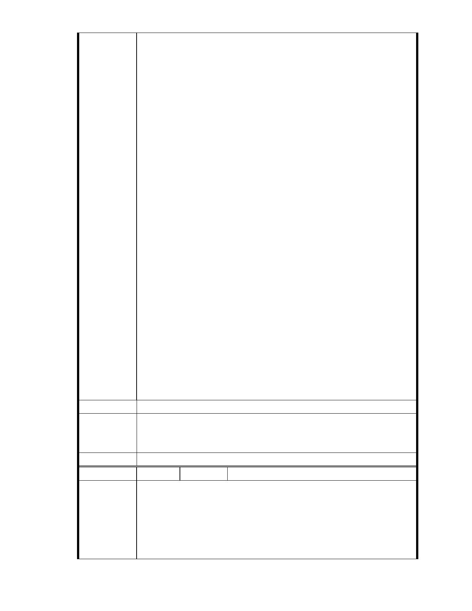

受文者： 臺北市政府
回覆內容：
謝謝來信，所陳對於內湖保護區的都更問題，我們將彙整移請主管
機關參處。感謝您熱誠建言，今後仍盼不吝惠賜卓見，與政府攜手共創
臺灣更美好、光明的未來。敬祝
平安如意
總統府 敬啟
E-mail：candy32120@yahoo.com.tw
姓 名：王秀華
聯絡地址：台中市大肚區沙田路一段 566 巷 12 弄 4 號
聯絡電話：0927281982
信件編號：20131008714
發信對象：陳情或意見反映
標 題：反破壞 反慈濟
內 容：
最近反對聲浪越來越大 對於內湖保護區的更都問題
連小朋友都可以回答的問題 竟然要進入審查
生態是不允許破壞的 請總統多看看自然的書
一破壞 整個環境都會改變 保護區 不只是保護 而是給大自然一個家
做好事有好報 做壞事 不是不報是時候未到 而我們現在種下的種子 是
好事壞 請不要讓錯誤發生
發信日期：102-3-17
驗證日期：102-3-17
建議辦法
一、本案已進入都市計畫法定程序，後續將依都市計畫委員會審定內容
市府說明
為準。
二、相關陳情意見將納入本案審查人民意見，依法定程序辦理。
委 員 會 決 議 同編號 1。
編 號 269 陳情人 楊重信
對慈濟申請「變更保護區為社會福利特定專用區」之意見：
一、不適法：
陳情理由
本案主要計畫法律依據引用都市計畫法第 27 條第 1 項第 3 款規定不
適法。
都市計畫法第 26 條規定：都 市 計畫 經 發布 實 施後 ， 不 得隨 時 任
意 變 更。但 擬 定計 畫 之 機關 每 三年 內 或五 年 內 至少 應 通盤 檢 討
- 311 -